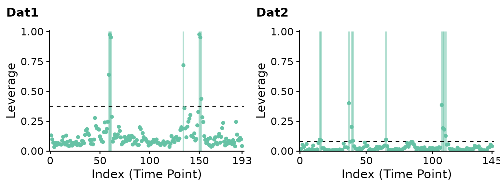
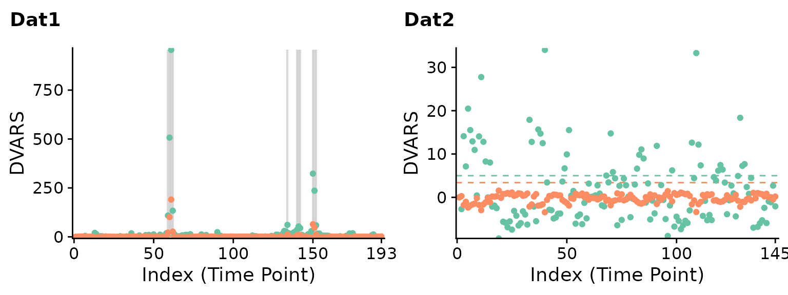
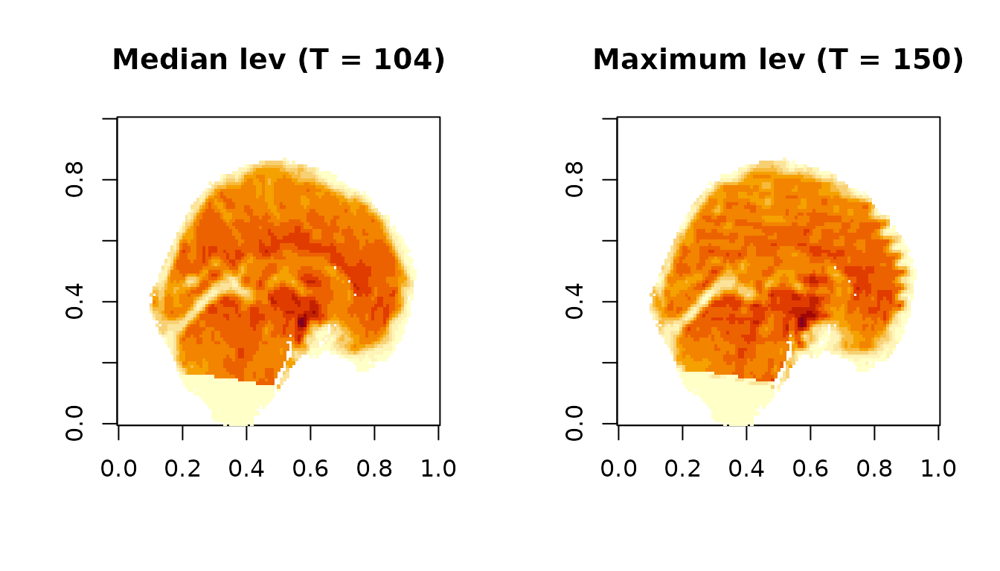
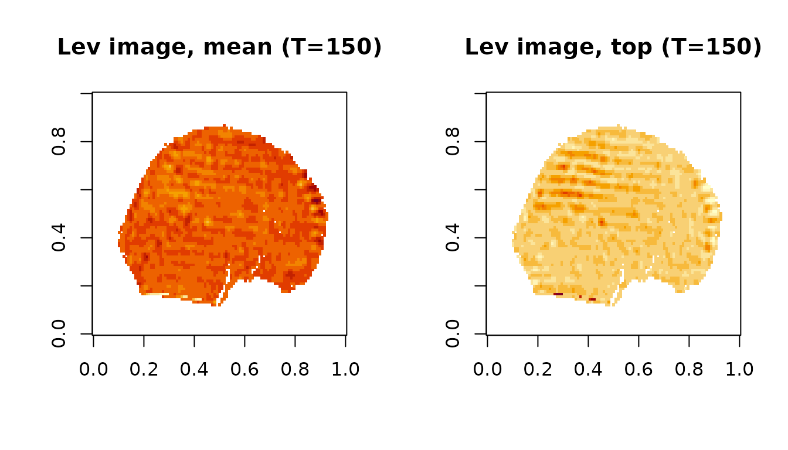
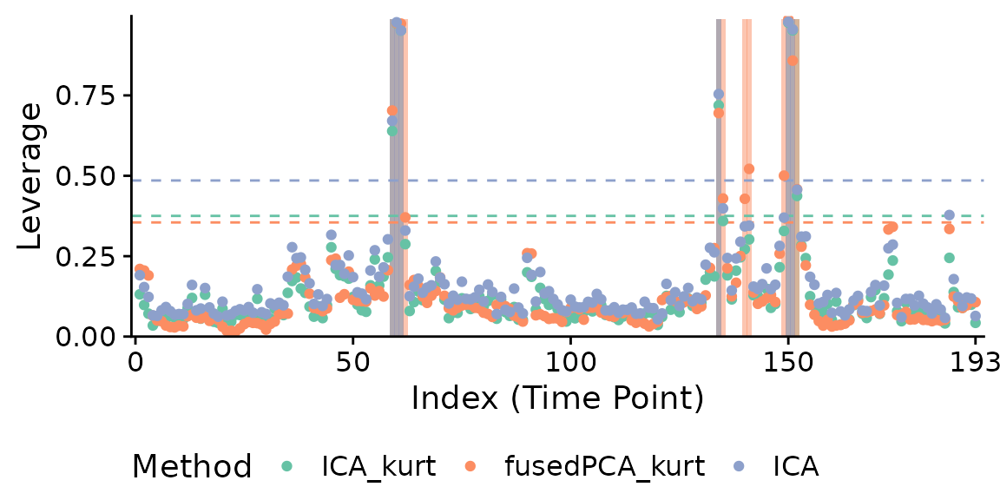

fMRIscrub
vignettes/projection_scrubbing.rmd
projection_scrubbing.rmdfMRIscrub is an R package that implements routines for cleaning fMRI data, namely data-driven scrubbing (projection scrubbing and DVARS), motion scrubbing (framewise displacement), anatomical CompCor, detrending, and nuisance regression. Several of these methods are also applicable to other high-dimensional data analysis tasks. For example, projection scrubbing can be used as a general outlier detection method.
In this vignette we will highlight the use of projection scrubbing for identifying and removing contaminated volumes from fMRI scans. Projection scrubbing works by identifying component directions in the data likely to represent artifactual patterns, and then computing a composite measure for the amount of these signals at each volume. The projection can be PCA, ICA, or “fused PCA,” and the composite measure is based on the linear model concept of leverage. (An earlier version of projection scrubbing was named “PCA leverage”). Like other scrubbing methods, it is designed to detect burst noise which occurs due to transient artifact sources such as subject head motion. Projection scrubbing can be cited with the following papers:
Citations for the other routines included in fMRIscrub can be found on their respective documentation pages, e.g. help(fMRIscrub::DVARS).
fMRIscrub includes resting-state scans from two subjects in the Autism and Brain Imaging Data Exchange (ABIDE), a publicly available neuroimaging resource (Di Martino and others, 2014). The first scan contains several artifacts likely due periods of high subject head motion; the second has few visible artifacts. The data represent axial slices instead of the entire brain to minimize the package size of fMRIscrub.
The data for both subjects consist of a sagittal slice from an fMRI volume. The fMRI data was preprocessed with pre-processed with slice time correction, rigid body realignment estimation, spatial normalization to MNI space, and linear detrending. A brain mask has been applied to vectorize the data, forming a \(T \times V\) (time by voxel) matrix. These are automatically added into the environment upon loading fMRIscrub:
dim(Dat1) # subject 0050048 (Pitt); many artifacts## [1] 193 4675
dim(Dat2) # subject 0051479 (Caltech); few or no artifacts## [1] 145 4679We will now run projection scrubbing on both datasets. We’ll use the default implementation (ICA leverage), except additionally we will stabilize each component’s mean and variance prior to kurtosis and leverage computation.1
ps.Dat1 = pscrub(Dat1, verbose=TRUE, comps_mean_dt=1, comps_var_dt=1)## Checking for missing, infinite, and constant data.## Warning in pscrub_multi(X = X, projection = projection, nuisance = nuisance, : Removing 283 constant data columns (out of 4675).## Performing nuisance regression.
## Centering and scaling the data columns.
## Computing PCA.
## Computing ICA.
## Computing leverage.
# same as: scrub(Dat1, verbose=TRUE, comps_mean_dt=1, comps_var_dt=1)
ps.Dat2 = pscrub(Dat2, verbose=TRUE, comps_mean_dt=1, comps_var_dt=1)## Checking for missing, infinite, and constant data.## Warning in pscrub_multi(X = X, projection = projection, nuisance = nuisance, : Removing 68 constant data columns (out of 4679).## Performing nuisance regression.
## Centering and scaling the data columns.
## Computing PCA.
## Computing ICA.
## Computing leverage.Let’s take a look at the leverage timeseries for both scans with plot. The flagged timepoints are highlighted by the grey bars.
p1 <- plot(ps.Dat1, title="Dat1", show.legend=FALSE)
p2 <- plot(ps.Dat2, title="Dat2", show.legend=FALSE)
cowplot::plot_grid(p1, p2, nrow=1)
ICA leverage indicates clear outliers in the first dataset around the 60th and 150th timepoints. while the second dataset is relatively artifact-free, a few timepoints are still flagged including around the 40th and 110th timepoints. Note that the suspected artifacts in the first dataset have significantly greater leverage than the suspected artifacts in the second dataset.
DVARS, another data-driven scrubbing technique (Afyouni and Nichols, 2018), yields similar results:
p1 <- plot(DVARS(Dat1), title="Dat1", show.legend=FALSE)
# same as: plot(scrub(Dat1, "DVARS"), title="Dat1", show.legend=FALSE)
p2 <- plot(DVARS(Dat2), title="Dat2", show.legend=FALSE)
cowplot::plot_grid(p1, p2, nrow=1)
Let’s see what the problem was in the first scan. We can reconstruct the original fMRI image using the mask which was originally applied to vectorize it.
## oro.nifti 0.10.3
library(neurobase)
# Unmask the first scan
fname = system.file("extdata", "Dat1_mask.nii.gz", package = "fMRIscrub")
Mask1 = readNIfTI(fname) > 0 #Pitt_0050048 (full of artifacts)
Mask1 = array(Mask1, dim=c(dim(Mask1), 1)) # 2D --> 3D slice
Img1 = fMRIscrub::unmask_vol(t(Dat1), Mask1)We will compare the timepoint of median leverage (left) to the timepoint of maximum leverage (right).
mfrow_original <- par("mfrow")
par(mfrow=c(1,2))
levs = ps.Dat1$measure
t_med = order(levs)[ceiling(length(levs)/2)]
t_max = which.max(levs)
image(Img1[,,,t_med], main=paste0('Median lev (T = ', t_med, ')'))
image(Img1[,,,t_max], main=paste0('Maximum lev (T = ', t_max, ')'))
The median time point appears normal, whereas the most outlying time point clearly has banding artifacts likely due to subject motion.
par(mfrow=mfrow_original)fMRIscrub can also display the “artifact images” for each outlying observation. These are based on the projection directions for the selected components. There are two types of artifact images: the composite of the selected directions, weighed by the variance-normalized scores for that timepoint, and the single direction with the strongest signal at that timepoint. Here are the artifact images at 150 for the first dataset:
psx <- pscrub(Dat1, projection="ICA", get_dirs=TRUE, comps_mean_dt=1, comps_var_dt=1)## Warning in pscrub_multi(X = X, projection = projection, nuisance = nuisance, : Removing 283 constant data columns (out of 4675).
artImg1 = artifact_images(psx)
par(mfrow=c(1,2))
# Constant voxels are deleted during the `pscrub` algorithm, so the artifact images will have
# missing values where the constant voxels were.
artImg1.mean = unmask_vol(t(artImg1$mean), Mask1)
artImg1.top = unmask_vol(t(artImg1$top), Mask1)
idx = which(which(psx$outlier_flag) == t_max)
image(artImg1.mean[,,1,idx], main=paste0('Lev image, mean (T=',t_max,')'))
image(artImg1.top[,,1,idx], main=paste0('Lev image, top (T=',t_max,')'))
The artifact images highlight the banding artifact present at this time point.
As input, pscrub takes a \(T\) x \(V\) matrix, \(Y\). In our case, \(Y\) represents an fMRI run: each row is a vectorized volume, and each column represents the timeseries of a single data location. Next, the algorithm performs the following steps:
Perform a nuisance regression with four discrete cosine transform (DCT) bases to remove low-frequency trends in the data. This helps the data projection method better identify artifactual components. (More or less nuisance regressors can be specified with the nuisance argument.)
Normalize \(Y\) by centering and scaling its columns robustly. (This can be disabled with the center and scale arguments.)
Decompose the data into \(Q\) components, each consisting of a length \(V\) projection direction and a length \(T\) signal timecourse, using PCA, ICA, or fused PCA. The projection directions are the \(V\) matrix in PCA and fused PCA (\(Y = UDV'\)), and the \(M\) matrix in ICA (\(Y = MS\)). The signal timecourses are the \(U\) matrix in PCA and fused PCA, and the \(S\) matrix in ICA. By default, ICA projection is used, and \(Q\) is determined by the “PESEL” algorithm (Sobczyk and others, 2017). (This can be changed with the projection and PESEL arguments. Also, comps_mean_dt and comps_var_dt can be used to detrend the means and variances of the component timecourses after estimation, which is disabled by default.)
Select \(K < Q\) of the \(Q\) components which are likely to contain artifact information. By default, we select high-kurtosis components, since burst noise tends to manifest as transient deviations of much greater magnitude than would be expected of neuronal signals. (Use kurt_quantile to change or disable the kurtosis cutoff.)
Measure leverage across the \(K\) components. If \(C\) is the matrix of selected components, then leverage is the diagonal of the hat matrix \(C(C'C)^{-1}C'\). The \(T\) leverage values are interpreted as a measure of outlyingness at each timepoint. Note that if the components are orthogonal and have a 2-norm of 1 as in PCA, then leverage simplifies to the sum of squared component values at each timepoint.
Leverage is thresholded to obtain the set of identified outliers. By default, timepoints with leverage greater than three times the median are flagged as outliers. (Use cutoff to change the threshold.)
For testing purposes, we can try different projections at the same time using the internal function pscrub_multi:
# Try all projections: this is excessive to plot
# ps.Dat1All <- fMRIscrub:::pscrub_multi(
# Dat1, projection="all", verbose=TRUE, comps_mean_dt=1, comps_var_dt=1
# )
# the default (ICA + kurtosis), fusedPCA + kurtosis, and ICA
ps.Dat1.3 <- fMRIscrub:::pscrub_multi(
Dat1, projection=c("ICA_kurt", "fusedPCA_kurt", "ICA"), verbose=TRUE, comps_mean_dt=1, comps_var_dt=1
)## Checking for missing, infinite, and constant data.## Warning in fMRIscrub:::pscrub_multi(Dat1, projection = c("ICA_kurt", "fusedPCA_kurt", : Removing 283 constant data columns (out of 4675).## Performing nuisance regression.
## Centering and scaling the data columns.
## Computing PCA.
## Computing fusedPCA.
## Computing ICA.
## Computing leverage.
fMRIscrub:::plot.scrub_projection_multi(ps.Dat1.3, legend.position="bottom")
Although the data will be mean-detrended during the nuisance regression with DCT bases, some trends may persist in the components because that nuisance regression is estimated non-robustly. A robust nuisance regression would take too much time to estimate at every data location. But since \(Q << V\), we can implement a robust nuisance regression for component detrending. Still, component detrending is disabled by default because more rigorous detrending of the original data, such as with anatomical CompCor, seem to reduce long-term trends in the components, even if estimated non-robustly. Since the CSF and white matter data are unavailable for these scans, we use component detrending instead of anatomical CompCor.↩︎